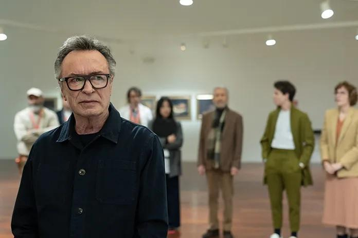

CAP.1 - EL CONCURSO
Antonio Dumas y dos candidatas más compiten por el puesto del Director del Museo. Para alegría de él es escogido, pero durará poco ya que encuentra un sin fín de problemas al tomar el puesto.
CAP.2 - TRASCENDENCIA
Antonio empieza a tomarle el pulso a su puesto y al personal del museo. Mientras va descubriendo los trapos sucios, se entera de una exposición mediocre que ha sido programada y con la cual, por supuesto, no está de acuerdo.
CAP.3 - CONCIENCIA ECOLÓGICA
Exposición de arte contemporáneo sobre medio ambiente. Uno de los artistas coloca un animal muerto para generar conciencia ecológica.